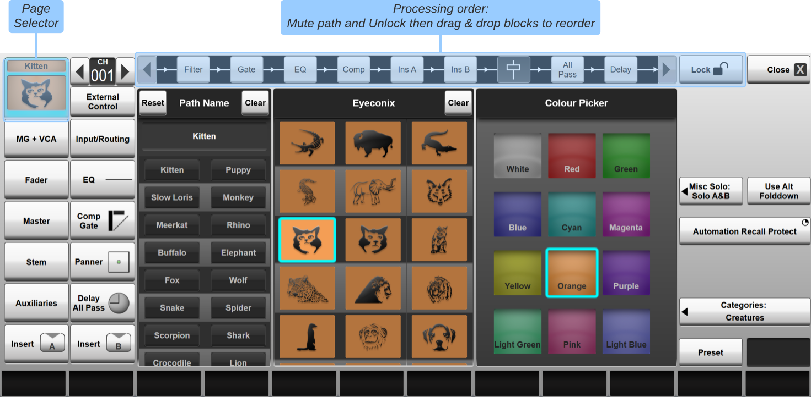

Processing Order
The processing order for the channel strip is shown across the top of the Eyeconix page of the Channel Detail dialogue, opened by double-tapping in the Eyeconix area at the base of the channel:


A dialogue similar to the below will appear:

Note: The buttons down the left of the dialogue define which Detail page is displayed. If the Name, Eyeconix and Colour page isn't already selected, touch the channel Eyeconix area in the top left corner of the dialogue.The Channel Scroller (near the top left corner) can be used to scroll the dialogue to a different channel.
The default processing order for Full Processing channels is:
Filter ➔ EQ ➔ Gate ➔ Compressor ➔ Insert A ➔ Insert B ➔ Fader ➔ All Pass Filter ➔ Delay
The default processing order for Dry channels is:
Insert A ➔ Insert B ➔ Fader
The default processing order for Matrix output channels is:
Filter ➔ EQ ➔ Insert A ➔ Insert B ➔ Fader ➔ All Pass Filter ➔ Delay
Because a change in the processing order can have a significant impact on the channel's output levels, the order is locked until the channel is muted:
The Lock button in the top right corner of the Detail page will prevent the processing order from being changed. Ensure it is deactivated before continuing and re-enable once finished to prevent accidental changes.
Mute the channel using its Mute button and you will see the padlock symbols disappear from the channel element icons.
You can now drag each icon to the left or right to change its position.
When you have finished, unmute the channel, though beware that you may have significantly changed the signal level.
Note: The changes will take effect as soon as the processing elements are moved. Care should be taken that any mix bus sends not in Follow Mute mode are turned down or muted accordingly, to prevent changes of processing order unexpectedly affecting their output level.Useful Links
Path ProcessingEffects Rack
Detail View
Index and Glossary